133 assessed · five buildings refined · 128 IDs retained. Existing muted gloomy woodland direction, not a new theme. Before = exact landed first-round after bytes. Identical canonical neutral renderer and automatic fit; not a frozen camera projection or measured game occupied size. Actual after exports, not illustrations.
Layered shelter recovered from flat brown oval; warm ochre/cream separates bread canopy from timber while the window, wheat and bread stay focal.
Before · actual neutral GLB
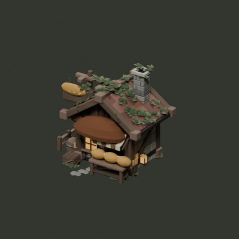
After · actual neutral GLB
96px canvas ·
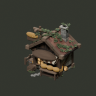
active_mesh_nodes: 934 → 361; active_triangle_instances: 46,003 → 46,003. Counts, not tested game performance.
buildings/weaver
Folds and narrow selvedges now carry weaving craft; a quiet ridge lane reduces independent competing growth without changing embedded shingles or loom.
Before · actual neutral GLB
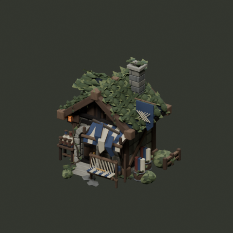
After · actual neutral GLB
96px canvas ·
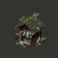
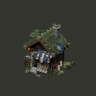
active_mesh_nodes: 2,733 → 2,202; active_triangle_instances: 108,482 → 106,650. Counts, not tested game performance.
buildings/magic_academy
Shaded orb now has volume rather than a lilac light disk; thin armillary bands identify scholarly magic. Purple crystal and narrow window glow remain intact.
Before · actual neutral GLB
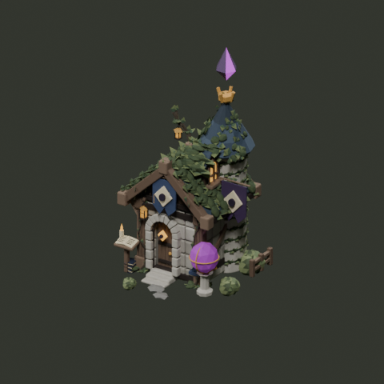
After · actual neutral GLB
96px canvas ·
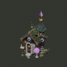
active_mesh_nodes: 7,495 → 6,900; active_triangle_instances: 250,918 → 248,974. Counts, not tested game performance.
buildings/town_hall
Civic bell brought into its opening with a slight ringing lean; independent canopy growth thinned at the front, retaining antler-like branch and emblem identity.
Before · actual neutral GLB
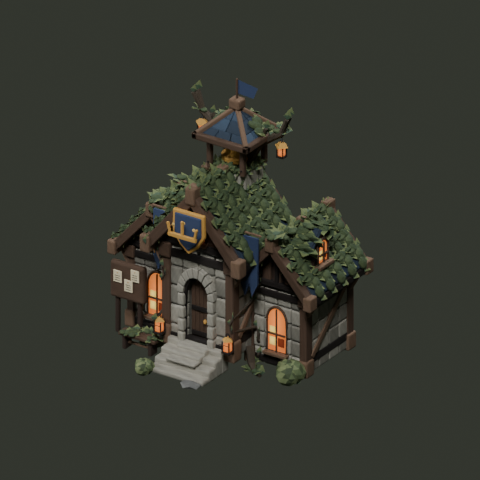
After · actual neutral GLB
96px canvas ·
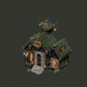
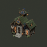
active_mesh_nodes: 7,143 → 6,479; active_triangle_instances: 284,099 → 281,055. Counts, not tested game performance.
buildings/woodcutter_hut
Purposeful saw-tooth silhouette and hoist pulley distinguish the working wheel from a wagon wheel without adding another growth layer. Suspended log retained: changing its supports adds complexity without a reliable small-view gain.
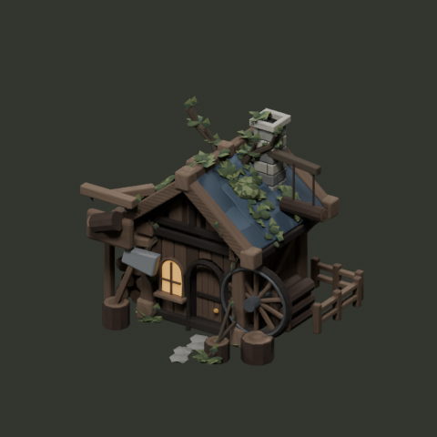
Before · actual neutral GLB
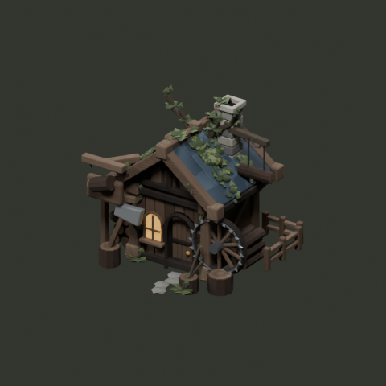
After · actual neutral GLB
96px canvas ·
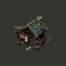
active_mesh_nodes: 980 → 364; active_triangle_instances: 44,469 → 44,821. Counts, not tested game performance.
Retained families and acceptance limits
Units keep face/weapon/faction/rig identity; terrain keeps focal shapes and connectors; props keep working silhouette and grip; native UI keeps existing contrast, API, interactions and original seal. All rows have a retained/refined reason in the ledger. Static contact consolidation reduces independent object nodes but increases unique baked mesh geometry: no GPU batching or performance promise. CPU renders and headless export/style/texture fixtures are not actual-game, GPU, artist or motion acceptance.